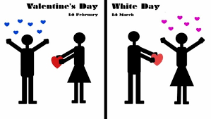
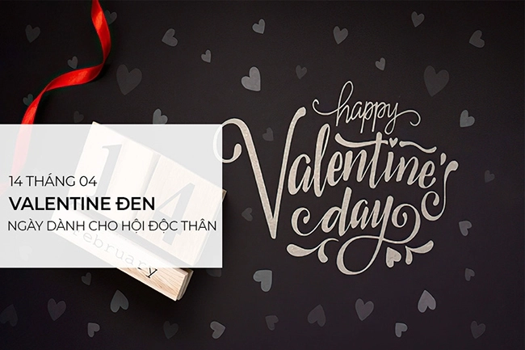

- Valentine là gì?
- Có mấy ngày valentine?
- Ý nghĩa của ngày valentine đỏ
- Ý nghĩa về ngày valentine trắng
- Ý nghĩa của ngày valentine đen
Ngày Valentine
Ngày Valentine là gì?, Valentine's Day còn được gọi là ngày Lễ tình nhân hay ngày Lễ tình yêu. Là một dịp đặc biệt để thể hiện tình cảm, tình yêu và lòng chung thủy đối với người bạn đời, người yêu hoặc những người thân yêu trong cuộc sống.

Theo truyền thống thì Valentine chỉ có 1 ngày duy nhất là vào ngày 14/02 hằng năm - Ngày Valentine đỏ. Nhưng để tôn vinh tình yêu thì 1 ngày chưa bao giờ là đủ. Vì thế, Valentine Trắng và Valentine Đen đã ra đời.

Truyền thuyết về nguồn gốc của ngày Valentine có từ thời cổ đại và được gắn liền với một linh mục Công giáo tên là Saint Valentine. Là câu chuyện về Saint Valentine và sự hy sinh của ông vì tình yêu và lòng trung thành. Theo truyền thuyết, vào thế kỷ thứ ba sau Công nguyên, trong thời đại Hoàng đế Claudius II cai trị Vương quốc La Mã, việc tuyển quân ngày càng khó khăn vì những người đàn ông không muốn rời xa gia đình và người yêu của mình. Vì lẽ đó, Hoàng đế Claudius II đưa ra một sắc lệnh cấm hôn nhân với các binh sĩ trẻ, cho rằng họ sẽ trở nên yếu đuối và không tận tụy với quân đội nếu có gia đình. Tuy nhiên, Saint Valentine - một linh mục tại Roma không chấp nhận lệnh cấm này và vẫn bí mật tiến hành làm lễ kết hôn cho các cặp đôi trẻ. Khi Hoàng đế Claudius II phát hiện ra hoạt động bí mật của Saint Valentine, ông đã bắt ông và đưa ra án tử hình. Trong thời gian bị giam giữ, Saint Valentine đã gặp và yêu con gái của thủ giam. Trước khi bị hành quyết, Valentine đã viết một lá thư cuối cùng cho cô gái đó và ký tên là "Tình yêu của bạn trong Đức Chúa Trời, Valentine". Từ đó, ngày 14 tháng 2 được coi là Ngày Valentine để tưởng nhớ tình yêu, sự hi sinh và lòng trung thành.

Câu chuyện Saint Valentine
Mặc dù có nhiều truyền thuyết và câu chuyện khác nhau về nguồn gốc của ngày Valentine, tuy nhiên, chúng đều thể hiện ý chí kiên cường và sự hy sinh cho tình yêu và lòng trung thành. Ngày Valentine đã trở thành một dịp để chúng ta tỏ lòng yêu thương và gửi đi những lời chúc mừng tốt đẹp đến nữa kia, những người chúng ta quan tâm và yêu thương trong cuộc sống.
Ngày Valentine Trắng hay White Day, White Valentine bắt nguồn từ Nhật Bản vào những năm 1960. Chuyện kể rằng vào ngày 14/03, một chàng trai bán kẹo dẻo muốn đáp trả tình cảm mà cô gái đã dành cho mình vào ngày Valentine đỏ, nên đã tặng cho cô gái ấy một hộp kẹo trắng như tuyết. Từ đó ngày Valentine Trắng ra đời. Đến nay, ngày Valentine Trắng được mọi người xem như ngày đáp trả. Tròn 1 tháng sau ngày Valentine đỏ, các bạn nam sẽ đáp trả sẽ đáp lại người thương yêu mình bằng những lời nói cảm động hoặc những món quà ý nghĩa. Còn đối với các cô gái, Valentine Trắng sẽ là một ngày hồi hộp và đầy mong chờ nhận được những món quà thay cho lời khẳng định từ chàng trai mình yêu.
Nếu Valentine Đỏ và Valentine Trắng là ngày dành cho các cặp đôi, thì “hội độc thân” cũng không hề thua kém khi có riêng cho mình ngày Valentine đen. Valentine Đen hay còn gọi là Black Day, Black Valentine bắt nguồn từ Hàn Quốc, vào ngày này các bạn trẻ đang còn độc thân hoặc tôn thờ chủ nghĩa độc thân sẽ tụ họp lại với nhau. Họ mặc trang phục đen, ăn mì tương đen truyền thống để cầu mong sẽ sớm tìm được nửa kia của mình và cũng là một cách tuyên bố với mọi người rằng cuộc sống của người độc thân vẫn vui vẻ hạnh phúc.
